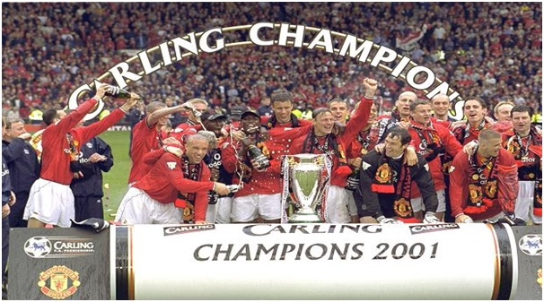

Chương 32

au cú ăn ba lịch sử, Manchester United khánh thành trung tâm huấn luyện Carrington, thay thế sân tập cũ The Cliff[1]. Trong trung tâm, ngoài những sân cỏ mượt như nhung, còn có sân bóng trong nhà, phòng tập thể lực, hồ bơi, phòng tắm hơi, bệnh viện thu nhỏ, phòng hội nghị, phòng họp báo…nói chung là đầy đủ phương tiện vật chất. Không những tối tân, hiện đại, Carrington còn cực kỳ kín cổng cao tường. Nếu như The Cliff nằm tại khu dân cư, lại trống trải, ai cũng vào được; thì Carrington tọa lạc nơi đồng không mông quạnh, muốn tới đó, phải đi qua một nhà máy lọc dầu, một trạm điện, và một bãi chứa xe tải mênh mông. Trung tâm như một pháo đài, với ba lớp hàng rào điện tử, và lực lượng tuần tra luôn cảnh giác 24/24; người ngoài nếu không giấy phép, không ai có thể xâm nhập. Xây dựng Carrington biệt lập như thế là theo ý Alex Ferguson; ông muốn cầu thủ luôn tập trung cao độ, không bị xao lãng, chi phối bởi ngoại cảnh.

Trung tâm Carrington (Ảnh: Sett.com)
Về lực lượng đội bóng, Sir Alex dự tính không mua nhiều cầu thủ, bởi chẳng có lý do gì để thay đổi đội hình vừa làm nên kỳ tích. Ông chỉ ký hợp đồng với Mark Bosnich theo dạng chuyển nhượng tự do. Thời kỳ khoác áo Aston Villa, Bosnich được coi là một trong những “người giữ đền” xuất sắc nhất giải Ngoại Hạng. Trước đó, anh từng thuộc biên chế United giai đoạn 1989-1991. Ngỡ như không ai xứng đáng thay thế Schmeichel hơn thủ thành người Australia.
Có điều, ít ai biết, vào gian đoạn cuối ở Villa Park, Bosnich đã bắt đầu “đổ đốn”. Khi United đang đàm phán cùng Bosnich, Ferguson cử thám báo đến theo dõi anh tập luyện. Nhận được toàn báo cáo tiêu cực, ông bảo Martin Edwards chuyển mục tiêu sang Edwin van der Sar, thủ môn ĐTQG Hà Lan. Rủi là mọi việc quá trễ, Edwards cho Fergie biết mình đã thỏa thuận cùng Bosnich, không thể nuốt lời. Thế là United đành chào đón cố nhân, dù biết tình trạng thể lực của anh rất kém. Không những thế, anh còn lười tập, ăn uống như hùm như hạm, không kiêng khem gì, nên ngày càng béo lên, khiến HLV và đồng đội ai cũng ngán ngẩm.
Ngoài vấn nạn Bosnich, trong giai đoạn chuẩn bị cho mùa giải mới, cả Ronny Johnsen, Jesper Blomqvist[2], và hậu vệ trẻ Wes Brown đều dính chấn thương rất nặng, buộc Ferguson phải quay lại thị trường chuyển nhượng, “quơ” vội thủ môn Massimo Taibi từ Venezia, và trung vệ Mikael Silvestre từ Inter Milan.Silvestre là một cầu thủ trung bình khá, không gì nổi trội, nhưng dù sao cũng tương đối hữu dụng, trong khi Taibi là bản hợp đồng thất bại hoàn toàn, bị fan hâm mộ đặt biệt danh “người Venice mù”. Ở trận thứ ba khoác áo United, anh làm trò cười cho thiên hạ khi để cú sút nhẹ hều của Matthew Le Tissier (Southampton) lọt qua chân vào lưới. Không vì một lỗi lầm mà “trảm” thủ môn, Ferguson vẫn tín nhiệm Taibi trong trận tiếp theo gặp Chelsea. Anh đáp trả niềm tin của thầy bằng cách để Chelsea…sút tung lưới năm trái. Thế là xong! Trận đấu đó cũng đánh dấu chấm hết cho sự nghiệp Taibi tại Old Trafford. Phần còn lại của mùa giải, Sir Alex sử dụng xen kẽ Mark Bosnich và thủ môn 37 tuổi người Hà Lan Raimond van der Gouw.
Dù vậy, hàng công United quá “khủng”, đủ sức bù đắp cho điểm yếu thủ môn ở giải quốc nội. Quỷ Đỏ đã nhiều lần VĐQG, song chưa bao giờ vô địch dễ như mùa 1999-2000: Còn đến bốn vòng đã chính thức đăng quang. Họ lập kỷ lục về điểm (91 điểm) và số bàn ghi được (97 bàn) trong một mùa giải. Khoảng cách 18 điểm giữa United và á quân Arsenal cũng là lớn nhất trong lịch sử. Chênh lệch về hiệu số thắng bại còn kinh khiếp hơn: Hiệu số của nhà vô địch là +52, của Arsenal là +30, của Leeds (hạng ba) chỉ là +15. Yorke và Cole tiếp tục tỏa sáng, với 24 và 22 bàn trên các mặt trận, Solskjaer đứng kế sau với 15. Đội trưởng Roy Keane cũng có một mùa bùng nổ, khi ghi được đến 12 bàn (trong đó có hai bàn rất tinh tế trong trận thắng Arsenal 2-1). Danh hiệu Cầu Thủ Xuất Sắc Nhất Nước Anh của PFA và FWA đều được trao cho Keane.
Do lịch thi đấu quá dày, United không tung ra đội hình mạnh nhất trong trận tranh Siêu Cúp Châu Âu với Lazio, đành chấp nhận thất bại 0-1. Bù lại, đội thắng Palmeiras (Brazil) cũng với tỷ số 1-0, giành Cúp Liên Lục Địa đầu tiên trong lịch sử. Tuy Roy Keane là người ghi bàn duy nhất, Ryan Giggs được bầu là cầu thủ xuất sắc nhất trận đấu, với phần thưởng là chiếc xe hơi Toyota.
Mọi năm, CLB đoạt Cúp Liên Lục Địa được coi như quán quântoàn cầu. Năm 2000, FIFA lại đẻ thêm ra Cúp Vô Địch Thế Giới Các CLB (FIFA Club World Cup), mời tất cả các nhà vô địch châu lục, không chỉ Âu-Mỹ, mà cả Á, Phi, vv…tham dự tại Brazil. Cúp này diễn ra vào tháng một, trùng với lịch đấu vòng bốn Cúp FA, khiến United lâm vào tình thế nan giải. Ferguson tính bỏ Club World Cup, song bấy giờ nước Anh đang tranh quyền tổ chức Cúp Thế Giới 2006 với Đức; United rút lui chẳng khác nào “chơi khăm” FIFA, nhiều khả năng sẽ làm Anh mất điểm trước Đức trong cuộc đua. Bởi thế, cả FA lẫn chính phủ Anh đều gây áp lực lên nhà đương kim vô địch châu Âu, buộc họ dự giải. Trong thế “trên đe dưới búa”, Quỷ Đỏ đành quyết định bỏ Cúp FA để sang Brazil.
Nói “trên đe dưới búa”, vì chính do quyết định này, United bị báo giới Anh chỉ trích kịch liệt. Tất cả đều lên án đội quá kiêu căng, ngạo mạn, dám coi thường truyền thống lịch sử của Cúp FA, giải đấu bóng đá lâu đời nhất hành tinh. Daily Mirrorto mồm nhất trong các báo, do Piers Morgan, tổng biên tập tờ này, là fan cuồng của Arsenal, vốn không từ một cơ hội nào để bôi xấu thầy trò Ferguson.
Bị đập tứ phía, Ferguson nổi cáu. Ông lại càng điên khi thấy đội mình hứng búa rìu vì FA, mà FA lại “câm miệng hến”, không thấy nói lời nào bênh vực CLB. Trước trận vòng ba Cúp Liên Đoàn với Aston Villa, một phóng viên lên tiếng hỏi vì sao United lại không xin đổi lịch đấu Cúp FA, hoặc dùng đội trẻ đá vòng bốn, thay vì bỏ giải. Đang tức tối trong người, Sir Alex nổ tung ngay:
-Đã xem lịch thi đấu chưa hả? Có thấy nó dày đặc thế nào không hả? Nếu chịu khó xem lịch thì không cần hỏi câu đấy đâu. Chúng bay thì biết cái gì, biết cóc gì đâu. Thôi thôi, không họp báo gì nữa, cả lũ cút đ. đi hết đi.
Nói xong, Sir sập cửa đi ra, một phút sau lại thò đầu vào:
-Này, lúc nãy là nói chuyện riêng. Cấm đứa đ. nào đăng lên báo đấy!
Về già, Ferguson có phần bớt dữ, không quá nghiêm khắc với cầu thủ như trước. Nhưng đó là đối với cầu thủ, còn với phóng viên, ông chả hiền hơn chút nào. Việc ông mắng nhà báo như trên là thường. Ghét báo nào, ông cấm cửa, không cung cấp thông tin, ra lệnh cho học trò không được tiếp xúc với báo đó. Daily Mirror bị “cấm vận” cho đến khi Piers Morgan bay chức, nhiều cơ quan truyền thông khác như BBC, Daily Mail…cũng cùng chung số phận. Ngay đến MUTV[3] cũng có lần bị Fergie “tấy chay”. Truyền thông dần đâm ra sợ Sir Alex, vì mất lòng ông thì mất nguồn tin, không có tin đăng, mà không có tin đăng về Manchester United thì ăn nói thế nào với độc giả? Bởi Quỷ Đỏ đã trở nên quá lớn, giờ đây báo chí cần họ hơn là họ cần báo chí.
Tâm trạng ức chế, dự Club World Cup vì bị ép, United chẳng thể hiện gì nhiều, chỉ chơi cầm chừng cho qua chuyện trên đất Brazil, thời gian còn lại chủ yếu…nghỉ dưỡng và tắm nắng. Đội thua Vasco da Gama của “vua lùn” Romario, hòa Necaxa (Mexico), chỉ thắng nổi South Melbourne (Australia), phải xách valy về nước ngay sau vòng đấu bảng. Nước Anh cũng chẳng được lợi lộc gì, vì quyền tổ chức World Cup 2006 rốt cuộc được trao về Đức…
Mùa 2000-2001 chứng kiến một số sự thay đổi quan trọng tại United. Trên thượng tầng, sau 20 năm cầm quyền, Martin Edwards trao lại chức GĐĐH cho cấp phó Peter Kenyon, chỉ giữ lại danh vị chủ tịch. Trao chức GĐĐHtức là trao trọn quyền, vì sau khi United trở thành công ty đại chúng, chức này mới thật sự chịu trách nhiệm điều hành công ty, còn ghế chủ tịch chủ yếu mang tính nghi lễ, tượng trưng[4]. Dưới sân cỏ, Sir Alex ký hai bản hợp đồng lớn với thủ môn Fabien Barthez, Đôi Găng Vàng World Cup 1998, và tiền đạo Ruud Van Nistelrooy, người vừa hai năm liên tiếp giành cú đúp danh hiệu: Cầu Thủ Xuất Sắc Nhất kiêm Vua Phá Lưới Hà Lan. Mua Barthez để giải quyết điểm yếu nơi cầu môn, sắm Nistelrooy vì Sir nhận thấy cặp Cole-Yorke đã bắt đầu xuống phong độ.
Nếu như việc mua Barthez không gặp cản trở gì, thì thương vụ Nistelrooy bị trục trặc. Giữa Nistelroooy và Quỷ Đỏ dường như không có cái duyên để sớm đến với nhau. Ngay từ năm 1998, khi tiền đạo này còn đá cho Heerenveen, tuyển trạch viên Martin Ferguson, em trai Sir Alex, đã nhận ra tài năng và tiến cử anh, nhưng Nistelrooy ký hợp đồng với PSV trước lúc United kịp hỏi mua. Nay United đặt vấn đề cùng PSV, hai bên đã đồng ý, mọi chuyện lại đổ vỡ vào phút cuối, do Nistelrooy bị thương nặng, phải nghỉ đấu một năm. Một HLV khác có lẽ sẽ bỏ của chạy lấy người, Ferguson thì không. Ông gọi điện cho Nistelrooy, sau đó đích thân bay sang Hà Lan, đến tận nhà anh để an ủi. “Cứ an tâm chữa trị”, Sir nói, “Chúng tôi sẽ chờ cậu tới cùng”. “Tôi kinh ngạc khi thấy thầy đến nhà mình”, Nistelrooy cảm động, “Suốt thời gian chấn thương, tôi luôn cảm thấy ấm lòng vì được thầy thường xuyên thăm hỏi”.
Chưa có Nistelrooy, song cũng như mùa trước, đường đến chức vô địch của United cực kỳ thênh thang. Họ lên ngôi đầu bảng từ tháng 10, và từ đó đến cuối giải, không bao giờ rớt xuống thứ hai. Đội giành những chiến thắng hoành tráng như 6-0 trước Bradford, 5-0 trước Southampton, và vô cùng đặc biệt, 6-1 trước đối thủ cạnh tranh trực tiếp Arsenal (Dwight Yorke lập hattrick). Sau lúc đã chắc chắn đăng quang, United ra quân với tinh thần “cưỡi ngựa xem hoa”, dẫn đến việc thua liền ba trận trong ba vòng đấu cuối cùng. Dù vậy, Quỷ Đỏ vẫn bỏ xa Arsenal 10 điểm. Họ lập thành tích ghi bàn nhiều nhất và để lọt lưới ít nhất giải Ngoại Hạng, đạt hiệu số +48, một trời một vực so cùng +25 của Pháo Thủ.
Trong năm thứ ba chơi bên nhau, cặp Cole-Yorkesa sút hẳn đi. Hattrick của Yorke vào lưới Arsenal chỉ là giây phút tỏa sáng hiếm hoi. Tổng kết cuối mùa, Cole ghi được 13 bàn, Yorke 12, chỉ ngang với tiền vệ Paul Scholes. May là United có đến bốn tiền đạo xuất sắc. Khi Cole-Yorke lu mờ, đã có Sheringham-Solskjaer. Ở tuổi 35, Sheringham thể hiện phong độ cao nhất trong sự nghiệp. Thể lực đã yếu, rất ít di chuyển, nhưng mỗi khi di chuyển, với nhạy cảm vị trí tuyệt vời, anh luôn tìm đến đúng điểm nóng, lẻn qua sự săn sóc của hậu vệ đối phương để chớp thời cơ ghi bàn. Lập công 21 lần, Sheringham là vua phá lưới của United, nhận phần thưởngCầu Thủ Xuất Sắc Nhất Nước Anhcủa cả PFA và FWA. Dưới tuyến tiền vệ, David Beckham một lần nữa về nhì trong danh sách Cầu Thủ Xuất Sắc Nhất Thế Giới của FIFA,đồng thời được đài BBC bình chọn là VĐV Thể Thao Xuất Sắc Nhất Đại Anh Quốc[5].
Với cúp bạc năm 2001, Sir Alex Ferguson vượt qua Bob Paisley của Liverpool, trở thành HLV giàu thành tích nhất ở giải Anh, với bảy lần VĐQG. Tính tất cả các giải, Fergie có tổng cộng 14 danh hiệu lớn, ngang bằng số danh hiệu của tất cả các đời HLV United trước đó (Mangnall 3, Busby 8, Docherty 1, Atkinson 2). Ông còn hoàn tất cú ăn ba cho riêng mình, bước vào bảng vàng lịch sử với tư cách nhà chiến lược đầu tiên ba lần liên tiếp VĐQG Anh. Trước đây, HLV huyền thoại Herbert Chapman từng hai lần vô địch cùng Huddersfield (1924, 1925), nhưng chuyển sang Arsenal trước khi Huddersfield đăng quang năm 1926. Thập niên 1980, Liverpool cũng giữ cúp suốt ba mùa, song dưới sự dẫn dắt của hai đời HLV: Bob Paisley và Joe Fagan. Huddersfield và Liverpool hồi đó vô địch phải lắm gian nan, chứ các năm 2000, 2001, United giành cúp dễ như lấy đồ trong túi.
Tiếc rằng niềm vui của United không trọn vẹn: Họ hai lần liên tiếp bị đánh bại ở tứ kết Cúp C1. Mùa 1999-2000, Quỷ Đỏ chiếm lợi thế với trận hòa 0-0 ngay trên sân Real Madrid, song lại tự hại mình ở Nhà Hát Những Giấc Mơ. Sau bàn phản lưới của Roy Keane, Raul hai lần lên tiếng, đưa Real dẫn đậm 3-0. Chủ nhà cố hết sức cũng chỉ rút ngắn tỷ số xuống được 2-3, do công Beckham và Scholes. Mùa 2000-2001, Bayern Munich báo thù thành công trận thua cay đắng tại Camp Nou, thắng United cả hai lượt trận với tổng tỷ số 3-1. Vượt qua United, cả Real lẫn Bayern sau đó đều lên ngôi vô địch.
Thật sự, với một thế hệ vàng vẫn đang trong độ tuổi chín muồi, Manchester United những năm 2000-2001 không yếu hơn năm 1999. Tại giải Ngoại Hạng Anh, CLB hoàn toàn vô đối, luôn vô địch trước đến bốn năm vòng, chứ không phải đợi đến vòng cuối cùng như mùa 1998-1999. Với sức mạnh đó, họ có khả năng giành thêm ít nhất một Champions League. Vấn đề của Quỷ Đỏ là vị trí thủ thành. Đội hình đoạt cú ăn ba chỉ thiếu đi Peter Schmeichel, song cái thiếu ấy trở thành tử huyệt. VĐQG đấu theo kiểu đường dài nên không sao, còn các giải cúp đá theo kiểu loại trực tiếp, nhiều khi chỉ cần một phút sơ sẩy hay một lỗi lầm cũng đủ khiến đội bóng phải rời cuộc chơi, nên vai trò của thủ môn hết sức quan trọng. Bosnich hay Van der Gouw đều không thể sánh với người khổng lồ Đan Mạch. Barthez phản xạ cực tốt, nhưng chuyên diễn trò hề trên sân cỏ. Màn diễn hài hước nhất của Barthez trong mùa 2000-2001 diễn ra ở trận gặp West Ham tại vòng bốn Cúp FA. Khi Di Canio của West Ham dẫn bóng vào vùng cấm địa, chàng trọc người Pháp không lao ra truy cản, cũng không thủ thế, mà đứng như trời trồng, tay giơ lên cao, báo hiệu với trọng tài đối phương đã việt vị. Thậm chí Di Canio đã vào đến sát vòng 5m50, co chân chuẩn bị sút, chàng ta vẫn đứng ngây như phỗng. Kết quả: West Ham thắng 1-0, đá văng United.
Rời Old Trafford, Peter Schmeichel vẫn thể hiện phong độ đỉnh cao tại Sporting Lisbon, Aston Villa và Manchester City. Nếu Schmeichel chịu ở lại thêm vài năm, có thể mọi chuyện đã rất khác. Real Madrid chưa chắc đã vô địch châu Âu lần thứ chín.

Mùa 2000-2001, Manchester United vô địch Ngoại Hạng lần thứ ba liên tiếp (Ảnh: Thesun.co.uk)
Chú thích:
[1] The Cliff được giữ lại làm sân tập cho đội trẻ.
[2] Vì chấn thương quá nặng, Johnsen và Blomqvist không sao lấy lại được phong độ đỉnh cao, lần lượt phải rời Old Trafford.
[3] MUTV: Kênh truyền hình riêng của Manchester United, ra mắt năm 1998.
[4] Năm 2002, vì dính vào scandal liên quan đến gái điếm, Edwards phải từ nốt chức chủ tịch, chính thức nghỉ hưu. Thay ông ở vị trí này là một doanh nhân khác: Sir Roy Gardner.
[5] Sau Bobby Moore, Paul Gascoigne, và Michael Owen, Beckham mới là cầu thủ bóng đá thứ tư được trao danh hiệu này. Tuy nhiên, phải nhận rằng anh được tôn vinh vì thành tích xuất sắc với tuyển Anh tại vòng loại World Cup 2002, hơn là vì phong độ ở United.